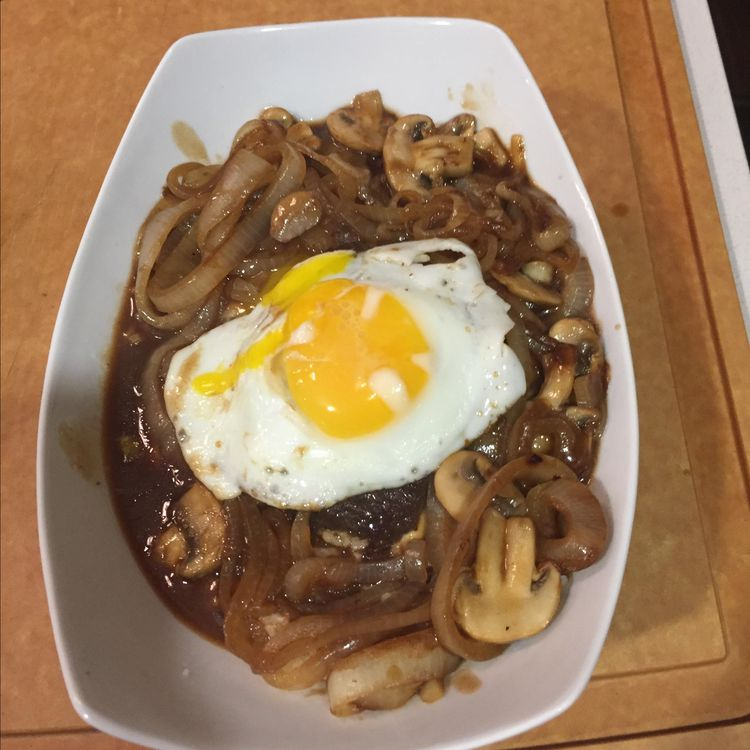

Home
Loco Moco

Ingredients
- cooking spray
- 1 pound ground beef chuck
- 1 cup sliced onions
- 1/2 cup water
- 1 cup sliced mushrooms
- 1 (12 ounce) jar brown gravy (such as Heinz)
- 4 eggs
- 4 cups cooked rice
Steps
- Grease a large skillet with cooking spray and heat over medium heat.
- Divide ground chuck into four equal portions; form into patties.
- Fry patties in the hot skillet until they begin to firm, are hot, and are slightly pink in the center, about 6 minutes per side. An instant-read thermometer inserted into the center should read 140 degrees F (60 degrees C). Remove patties to a plate, retaining drippings in the skillet.
- Stir onion and water into reserved drippings. Reduce heat to low and cook until onion is slightly softened, about 5 minutes. Add mushrooms; cook and stir until mushrooms are cooked through, about 5 minutes more.
- Pour gravy over onion-mushroom mixture; stir. Cook until gravy is hot, about 5 minutes. Gently lie patties into gravy; simmer until reheated through.
- While patties simmer in gravy, grease a separate skillet with cooking spray and heat over medium heat. Fry eggs in the hot skillet until whites are opaque, but yolks remain runny, 2 to 3 minutes.
- Divide cooked rice between four plates. Top each rice portion with a beef patty and cover each patty with an egg. Pour gravy equally over each portion.